Lecture 4 · Fixed Points, Feedback, and Adaptive Computation
Iterative Refinement
and Introspective Computation
Networks that look at their own internal state, refine it iteratively, and decide
how much further "thinking" to do. Where L3 asked how much computation?,
L4 asks what should that computation be doing — and who decides?
presented by
Sergey Plis


Course Arc
The unifying theme of this course is replacing fixed-depth feed-forward computation with iterative, stateful computation — whether via recurrence, equilibrium solving, adaptive depth, explicit memory, or learned test-time updates — so that models can allocate effort where it is needed.
L1
Preliminaries
L2
Fixed points
L3
Adaptive depth
L4
Introspection
L5
Memory
L6
Learned update rules
The Question L4 Asks
L3 asked: how much computation should we spend per input (halting, routing, adaptive depth)?
What should that computation be doing — and who decides?
- What is refined? hidden states, layer masks (MIND), attention operators (SELF), continuous dynamics (CTM)
- Who decides when to stop? fixed count, introspection network, operator convergence, certainty threshold
- Where does reasoning happen? token space (CoT) vs latent space (this lecture)
Token-Space vs Latent-Space Reasoning
Token Space (Chain-of-Thought)
- Decode intermediate thoughts as language
- Re-encode generated tokens into hidden states
- Decode again, repeatedly
- Reasoning is externalized
Latent Space (Iterative Refinement)
- Refine internal state in place
- No intermediate decoding required
- Reasoning is internal and continuous
- Often cheaper at test time
Biological brains iterate without externalizing intermediate states as language.
Three Instances of Introspection
| MIND (ICLR 2025) | SELF-Transformer (2025) | CTM (2025) | |
|---|---|---|---|
| What iterates | Hidden activations of chosen layers | Attention matrix \(\mathcal{T}\) itself | Neuron pre/post-activation trajectories |
| Who decides | Auxiliary introspection net | Fixed-point convergence criterion | Emergent certainty over internal ticks |
| Extra params | Small introspection MLP | Zero | NLMs + synapse model |
| Bridge from L2/L3 | FPI + Neumann-RBP on chosen layers | Implicit differentiation at \(\mathcal{T}^*\) | RNN as richer dynamical system |
Roadmap for Today
- MIND — introspection decides the computation graph
- SELF-Transformer — attention refines itself to a fixed point
- Continuous Thought Machines — internal neural dynamics
- Synthesis and open problems
MIND
Masking Inference with Neural Dynamics
The human brain efficiently handles various computations with a limited number of neurons.
- Fixed-depth nets spend the same compute on every input
- MIND learns to reuse parameters adaptively
- Easy inputs: little refinement, hard inputs: more refinement
The MIND Architecture
- Prediction network \(P\): performs task computation
- Selected layers run as fixed-point iteration blocks
- Introspection network \(I\): reads intermediate activations of \(P\)
- Outputs a per-layer binary mask
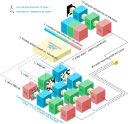
Key point: \(I\) conditions on what \(P\) has already computed, not only raw input.
Introspection as a Switch
For each layer \(\ell\), \(m_\ell \in \{0,1\}\)
- \(m_\ell = 0\): no-op or pass-through (skip heavy refinement)
- \(m_\ell = 1\): run fixed-point iteration for that layer
- Mask comes from argmax (or sample) over introspection probabilities
- Jointly adapts which layers engage and how long they iterate
The FPI Block
\[ z^* = f_\theta(z^*, x) \]
\[ z_{k+1} = f_\theta(z_k, x),\quad \|z_{k+1} - z_k\| < \varepsilon \]
- Same L2 equilibrium idea, now layer-by-layer
- Weight tying keeps parameter count independent of iteration count
- Compute scales with difficulty, not fixed depth alone
Training MIND: Composite Loss
\[ \mathcal{L} = \mathcal{L}_{\text{pred}} + \lambda\,\mathcal{L}_{\text{intro}} \]
- \(\mathcal{L}_{\text{pred}}\): task loss on prediction network output
- \(\mathcal{L}_{\text{intro}}\): compute-cost penalty (engaged layers × iterations)
- \(\lambda\): accuracy/compute trade-off set during training
- Backprop through FPI uses phantom gradients
Toy Demo: Ising Complexity
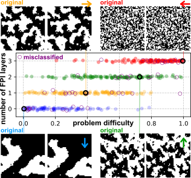
- Low temperature: structured samples, usually easier
- High temperature: noisy samples, usually harder
- Number of engaged FPI layers tracks input difficulty
- No direct supervision on "difficulty" required
Results: Big Gains, Tiny Networks
- ImageNet: 96.62% with a 3-layer prediction network
- Outperforms much larger baselines (e.g., ResNet-50 / EfficientNet-B7)
- SQuAD v1/v2: 95.8 / 88.7 F1 with negligible parameter overhead
- WikiText: better perplexity at lower parameter count
- Message: parameter reuse can beat brute-force scaling
MIND: Takeaway
- Introspection as primitive: a second network shapes the first network's compute graph
- Unifies L2 (FPI + implicit ideas) and L3 (adaptive routing/depth)
- Caveats: convergence can fail, masks can miscalibrate OOD, \(\lambda\) tuning is delicate
SELF-Transformer
A Zero-Parameter Route to Latent Iteration
\[ \mathcal{T} = \text{softmax}(QK^\top / \sqrt{d}),\qquad \text{output} = \mathcal{T}V \]
- In standard attention, \(\mathcal{T}\) is input-dependent but one-shot
- Question: what if \(\mathcal{T}\) itself needs iterative refinement?
The Core Idea in One Picture
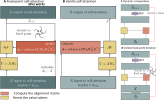
- FPSA iterates the alignment operator, not only final outputs
- This keeps the mechanism local to attention and parameter-efficient
Fixed-Point Self-Attention (FPSA)
\[ \mathcal{T}_{k+1} = \text{softmax}\!\left(\frac{Q_k K_k^\top}{\sqrt{d}}\right), \quad Q_k, K_k \text{ from } \mathcal{T}_k V \]
Stop when \(\|\mathcal{T}_{k+1} - \mathcal{T}_k\| < \varepsilon\) or \(k = K_{\max}\)
- Initialize with vanilla one-shot attention \(\mathcal{T}_0\)
- Zero additional parameters (reuse Q/K/V projections)
- Turn attention into a dynamical process over operators
Why Iterate the Operator?
Output Iteration
- Whole hidden state keeps changing
- No token is "done" until all are done
- Compute remains globally coupled
Operator Iteration (FPSA)
- Each token's alignment can stabilize separately
- Converged tokens can be frozen
- Compute focuses on unresolved tokens
Per-token adaptive compute with no new parameters.
Training: Implicit Differentiation at \(\mathcal{T}^*\)
\[ \frac{\partial \mathcal{L}}{\partial \theta} = \frac{\partial \mathcal{L}}{\partial \mathcal{T}^*}
\left(I - J_{\mathcal{T}^*}\right)^{-1}
\frac{\partial f}{\partial \theta}\Big|_{\mathcal{T}^*} \]
- No full unrolling through all refinement steps
- Memory remains constant in iteration count (L2 callback)
- Non-converged tokens are handled conservatively in backward
- Contraction condition gives convergence guarantees with safeguards
Inference Cost: Modest
- Typical refinement depth: 3-6 steps per layer
- About 1.6x GFLOPs, 1.3-1.4x latency vs BERT-Base
- Training and inference memory close to standard layer
- Zero parameter increase
Language Results
- BERT-Base + FPSA: GLUE 85.7, SQuAD 91.8 F1
- ELECTRA-Base + FPSA: GLUE 88.4, SQuAD v1/v2 95.2 / 88.7 F1
- Reasoning benchmarks (GSM8K, BBH, LogiQA) improve as well
- Latent test-time refinement helps even without explicit CoT output
Vision and Vision-Language Results
- SELF-ViT (ViT-B/16): ImageNet-1K top-1 86.3%
- COCO: mAP@50 86.7%
- Up to +20% on harder encoder-style tasks
- Patch-token ambiguity also benefits from operator refinement
SELF-Transformer: Takeaway
- Attention is a program: refine the operator, not just the state
- Zero-parameter drop-in for extra test-time reasoning
- Latent-space refinement is private, compact, and device-friendly
- Caveats: convergence assumptions and non-converged token handling matter
From Layer Iteration to Internal Neural Dynamics
- MIND iterates layers; SELF iterates an operator
- CTM still uses discrete neural layers, but adds a recurrent internal tick dimension
- Thinking unfolds over ticks: local update windows are used while full trajectories are retained
- CTM story: recurrence + synchronization + adaptive stopping by certainty
Motivation
animal brain is highly dynamic and time dependent
The Abstraction of Time in Modern AI
- NNs abstract away temporal dynamics
- Firing rate → single static value
- Efficiency over biological realism
Bridging the Cognitive Gap
- Brains rely on STDP and oscillations
- Missing temporal components → gap with human cognition
- Time must be central to AI
let's build a neural network model that is as dynamic
- Neuron-level temporal processing
- Neural synchronization as latent representation
- Capture essential temporal dynamics
- Sequential thought on any data modality
- Computationally tractable
we had something similar
Recurrent Neural Networks
the biological inspiration
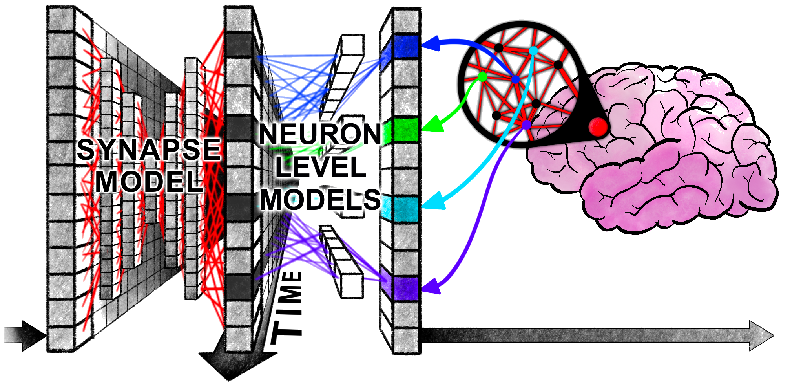
CTM vs LSTM: neural dynamics
LSTM — static, disorganized
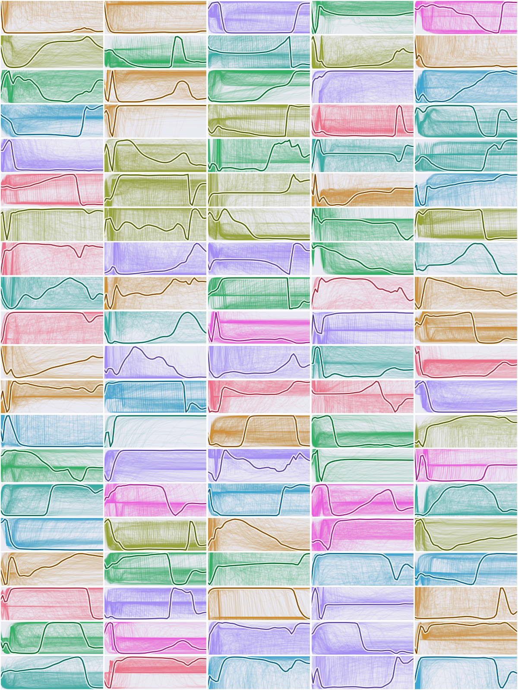
CTM — rich, structured
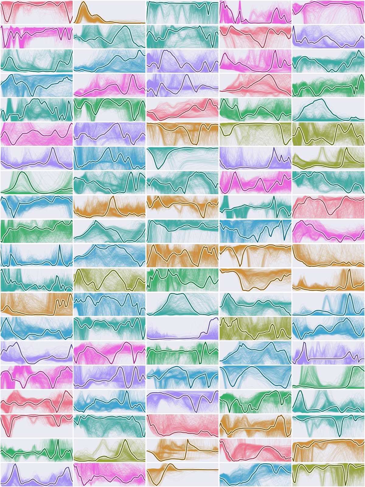
Methods
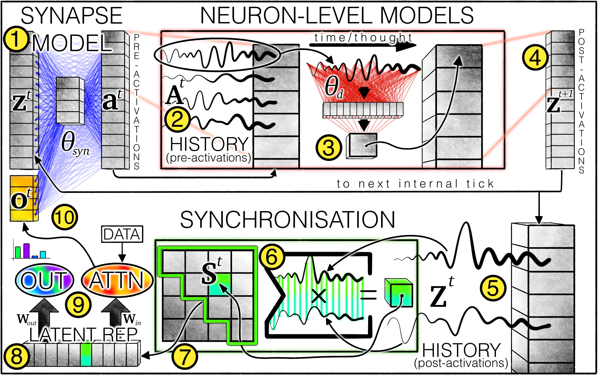
① Synapse Model
\[ \mathbf{a}^t = f_{\theta_{syn}}\!\left(\text{concat}(\mathbf{z}^t,\, \mathbf{o}^t)\right) \in \mathbb{R}^D \]
- A U-NET-style MLP shared across all neurons
- Takes current latent state \(\mathbf{z}^t\) and attention output \(\mathbf{o}^t\)
- Produces pre-activations \(\mathbf{a}^t\) — one per neuron
- Drives the recurrent dynamics at each internal tick
② Pre-activation History
\[ \mathbf{A}^t = \begin{bmatrix} \mathbf{a}^{t-M+1} & \mathbf{a}^{t-M+2} & \cdots & \mathbf{a}^t \end{bmatrix} \in \mathbb{R}^{D \times M} \]
- A rolling window of the last \(M\) pre-activations
- Each row is the history for one neuron
- \(M \approx 10\text{–}100\) — learnable initial history \(\mathbf{a}^{t=1}\)
- Gives neurons memory of their recent inputs
③ Neuron-Level Models (NLMs)
\[ \mathbf{z}^{t+1}_d = g_{\theta_d}\!\left(\mathbf{A}^t_d\right) \]
- Every neuron \(d\) has its own private weights \(\theta_d\)
- Depth-1 MLP of width \(d_{hidden}\) — a mid-level abstraction
- Processes the neuron's own pre-activation history \(\mathbf{A}^t_d\)
- Replaces the static ReLU with a learnable temporal function
④ Post-activations
\[ \mathbf{z}^{t+1} \in \mathbb{R}^D \]
- Output of all NLMs stacked into one vector
- Concatenated with attention output \(\mathbf{o}^t\) to form input to synapse model at tick \(t+1\)
- This is the latent state that evolves tick-by-tick
- Fully decoupled from input data dimensions
⑤ Post-activation History
\[ \mathbf{Z}^t = \begin{bmatrix} \mathbf{z}^1 & \mathbf{z}^2 & \cdots & \mathbf{z}^t \end{bmatrix} \in \mathbb{R}^{D \times t} \]
- The full trajectory of the network's latent state
- Grows at each tick — unbounded in length
- Captures the temporal dynamics across the entire thought process
- This matrix is the raw material for neural synchronization
⑥ Neural Synchronization
\[ \mathbf{S}^t = \mathbf{Z}^t \cdot (\mathbf{Z}^t)^\top \in \mathbb{R}^{D \times D} \]
- Inner product of neuron trajectory histories
- \(S^t_{ij}\) measures how synchronised neurons \(i\) and \(j\) are over time
- Inspired by biological neural synchrony as a coding mechanism
- The central representation — replaces a static vector
⑦ Neuron Pairing & Scaling
\[ \mathbf{S}^t_{ij} = \frac{(\mathbf{Z}^t_i)^\top \cdot \text{diag}(\mathbf{R}^t_{ij}) \cdot \mathbf{Z}^t_j}{\sqrt{\textstyle\sum_{\tau=1}^{t} [\mathbf{R}^t_{ij}]_\tau}} \]
- \(\mathbf{S}^t\) scales \(O(D^2)\) — too large to use fully
- Randomly sample \((i,j)\) pairs → compact \(\mathbf{S}^t_{out}\) and \(\mathbf{S}^t_{action}\)
- Learnable decay \(r_{ij} \geq 0\) controls influence of past ticks
- Higher \(r_{ij}\) = more recent ticks emphasized
\[ \mathbf{R}^t_{ij} = \bigl[\exp(-r_{ij}(t-1))\;\; \exp(-r_{ij}(t-2))\;\; \cdots \;\; \exp(0)\bigr]^\top \in \mathbb{R}^t \]
⑧ Latent Representations
\[ \mathbf{y}^t = \mathbf{W}_{out} \cdot \mathbf{S}^t_{out}, \qquad \mathbf{q}^t = \mathbf{W}_{in} \cdot \mathbf{S}^t_{action} \]
- Two sub-sampled synchronization matrices, projected linearly
- \(\mathbf{y}^t\) — used to make output predictions
- \(\mathbf{q}^t\) — used as attention query to observe data
- Both are derived entirely from neural dynamics — no direct state readout
⑨ Outputs at Each Tick
\[ \mathbf{y}^t \in \mathbb{R}^C \]
- Prediction vector produced at every internal tick \(t\)
- \(C\) = number of classes (e.g., probabilities after softmax)
- The model can change its mind as it "thinks" longer
- Valid predictions at every tick — an external certainty threshold selects when to read off
⑩ Attention Output
\[ \mathbf{o}^t = \text{Attention}\!\left(Q = \mathbf{q}^t,\; KV = \text{FeatureExtractor}(\text{data})\right) \in \mathbb{R}^{d_{out}} \]
- Standard cross-attention — the model queries the data
- Query \(\mathbf{q}^t\) is derived from neural synchronization (it "knows what to look for")
- Keys/values from a ResNet or other feature extractor
- \(\mathbf{o}^t\) concatenated with \(\mathbf{z}^{t+1}\) → feeds into the synapse model at next tick
Loss: Optimizing Across Internal Ticks
\[ L = \frac{L^{t_1} + L^{t_2}}{2}, \quad t_1 = \arg\min(\mathcal{L}), \quad t_2 = \arg\max(\mathcal{C}) \]
- Loss computed at two selected ticks per forward pass
- \(t_1\): tick with minimum loss — best prediction
- \(t_2\): tick with maximum certainty \(\mathcal{C} = 1 - H(\mathbf{y}^t)\) — most confident
- Implements native adaptive computation without explicit restrictions on which tick to use
Results
Rich dynamics of neurons
Neuron activity over time — each subplot is one neuron
Neural activity in 2D UMAP projection — size ∝ magnitude, blue/red = sign
Generalization: small → large mazes
- Trained on 39×39 mazes, paths up to length 100
- Tested on 99×99 mazes — paths ~6× longer
- Generalizes zero-shot — no retraining
- Internal world model built on-the-fly, no positional encodings
More thinking → better answers
Accuracy vs internal ticks (thinking time)
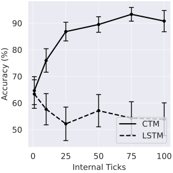
Accuracy vs maze path length
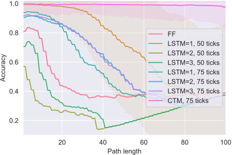
- More internal ticks → higher accuracy
- Harder mazes (longer paths) benefit most from more ticks
- Compute budget is a knob at inference time
Thinking about images
Attention weights + certainty over internal ticks
Top-5 accuracy per internal tick
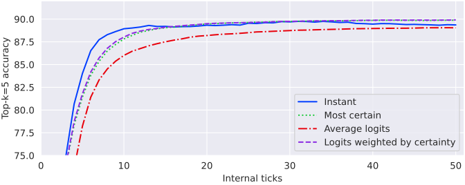
Accuracy at certainty thresholds 0.5 / 0.8
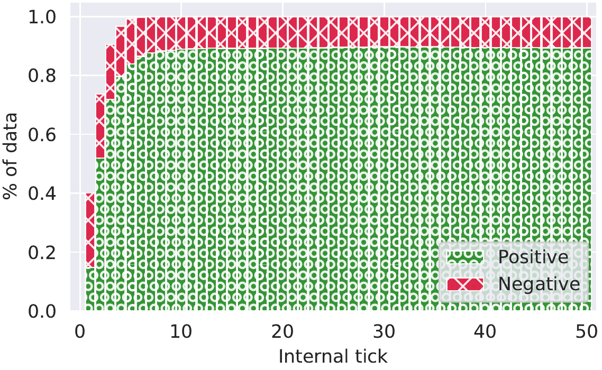
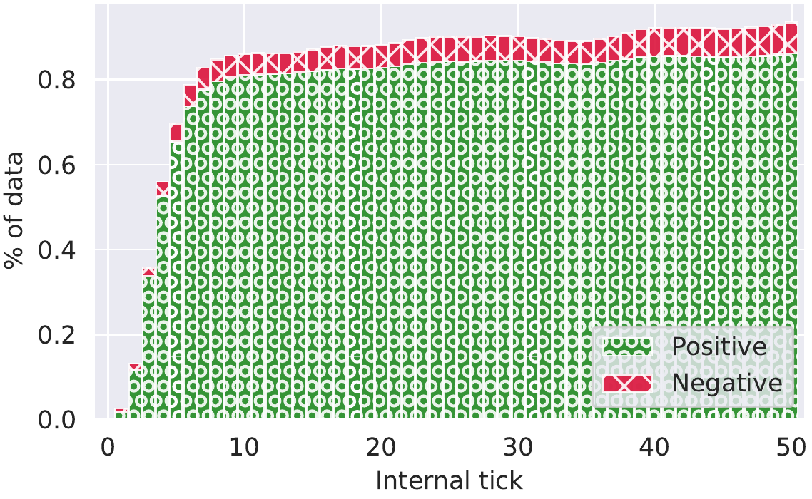
Well-calibrated uncertainty
Calibration on CIFAR-10
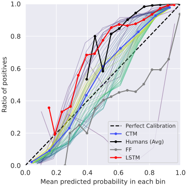
Calibration on ImageNet
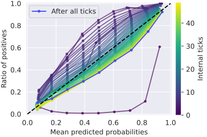
- CTM certainty correlates with actual correctness
- Better calibrated than LSTM baseline
- Certainty \(\mathcal{C}^t = 1 - H(\mathbf{y}^t)\) is a reliable confidence signal
Emergent adaptive compute
Mean wait times (internal ticks) per sequence index
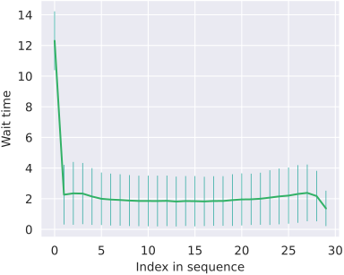
Wait time vs gap between sorted items
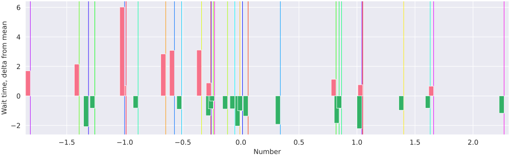
- CTM uses more ticks for harder inputs — not programmed, emergent
- Sorting: larger gaps between items → more internal compute
- Arises naturally from the two-tick loss function
CTM reaction times correlate with humans
CTM reaction times vs human reaction times (CIFAR-10H)
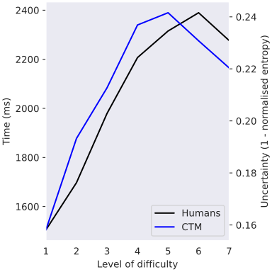
LSTM pseudo reaction times — no correlation
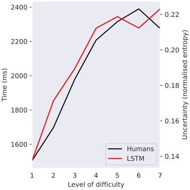
- CTM: hard images for humans → more ticks needed
- LSTM: no relationship with human reaction times
- CTM's temporal dynamics align with biological cognition
Live demo: solve a maze
The Design Space of Iterative Refinement
| MIND | SELF-Transformer | CTM | |
|---|---|---|---|
| What iterates | Selected layer activations | Attention operator \(\mathcal{T}\) | Neural activity trajectories |
| Who decides | Introspection mask network | Convergence criterion | Certainty threshold over ticks |
| Memory profile | Phantom gradient approximation | Implicit differentiation | Trajectory histories + synchrony |
| Parameter overhead | Small auxiliary net | Zero | Dedicated recurrent machinery |
Unified L4 Takeaways
- Iterative refinement is a design space: what iterates × who decides
- Introspection is broader than halting: not just "stop?", also "what should update?"
- Latent-space reasoning keeps intermediate thought internal
- L2 tools stay central: implicit differentiation and phantom gradients enable depth without full unrolling
Where This Breaks, and What Is Next
- Breakage modes: non-convergence, OOD miscalibration, sensitive \(\lambda, \varepsilon, K_{\max}\), and initialization
- Bridge to L5: these methods refine state, but do not explicitly remember across episodes
- Bridge to L6: MIND already learns to decide computation; next step is learning the update rule itself